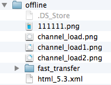
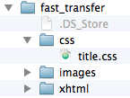

前提说明
客户端将已下载的必选资源信息以<客户端保存描述格式>保存在client.desc中。
客户端将所有的服务器可选资源信息以<服务器可选资源描述在客户端的保存格式>保存在option_server.desc中。
客户端需要支持0/1两个版本的逻辑。0版本与原来的完全相同。1版本才有新的协议集流程，也是本文档将要说明的。
客户端实现离线下载的基本接口，有lua脚本控制下载的时机。
tls:connect(params, callback)。详细说明参见接口文档。当脚本通过此接口发起握手时，客户端将通过exchange或handshake接口将本地资源必选资源和可选资源的hash值(h字段内容)上传服务器。具体如何传递参加加密信道接口说明。tls:connect(callback, params)接口必须带有回调函数，握手后会将握手返回的页面内容及检测更新的内容作为回调函数的参数。回调函数根据返回值，处理是否调用offline:update_desc接口，此接口调用update接口，获取下载列表，并将mustUpdate字段(m字段)内容作为回调函数的参数。offline:update_desc的回调函数参数，做相应的提示操作及后续的下载流程。offline:update_resource接口，开始资源下载。注: 针对需要及时更新的内容，如果offline:update_desc还没有返回下载的资源信息时无法确保使用最新的资源。如果有此类需求，则需要在offline:update_desc的回调中才能使用离线资源。
脚本根据握手中返回的资源更新的信息，选择是否调用offline:update_desc接口，此接口的功能是请求资源描述更新接口(ota/resource_update)，并将返回的内容保存到内存中，并将mustupdate字段(m字段)值作为回调函数的参数返回。
资源描述更新接口(ota/resource_update)会返回离线更新文件的相关信息及更新提示相关内容。 下载描述中包含如下信息:
必选资源的下载由脚本发起。当脚本调用offline:update_resource接口后，开始下载必选资源下载列表中的资源。
o字段中可选资源下载描述到option_server.desc中。h，t字段内容，用于离线资源的下载。l字段内容到内存中。h字段值保存到client.desc中。h字段值保存到client.desc中。可选资源的下载由lua脚本发起。
注 ：clientResource中的内容需要及时存储到硬盘中，防止程序崩溃导致的数据丢失。
单个普通资源和插件包可沿用之前的下载接口下载单个文件。插件包中的单个资源下载时须将zip资源包路径去掉。zip后缀与下载的资源文件路径拼接作为下载路径参数进行下载。
例如需要更新ebank.zip插件包的lua/ebank_util.lua文件，ebank.zip的路径为iphone/320-480/zip时，下载路径须指定为iphone/320-480/zip/ebank/lua/ebank_util.lua。因此：
资源下载成功后，将服务器返回的资源内容进行SHA1计算，并将SHA1值与服务器返回的r字段值进行比较。如果两个值一致，说明hash校验成功，否则hash校验失败。
服务器返回json中包含了资源文件的下载路径。
h：表示服务器地址，baseurl。
dir：表示文件在服务器上的存储路径。
file：表示文件名。
不同情况下的资源下载路径如下:
zip中文件下载路径：baseurl/dir/file
zip包下载路径：baseurl/dir/zip.zip
file下载路径：baseurl/file
客户端描述文件(client.desc)的数据格式参考
必选下载与可选下载描述分开保存。
必选资源描述保存在client.desc中，可选资源描述保存在option.desc中。
文件下载并校验成功后，将文件描述以指定格式保存到相应的描述文件中。
文件保存策略如下:
客户端保存离线文件的目录用三种。
下载的资源文件分为以下几种。
普通的资源。保存在offline-resources中，文件名为下载资源描述中的file代表的值。如下:
"file1" : // 普通资源 如: "welcome.png"
{
"r" : "c4f3cffb7d68e63531c60e74611a2d2f569173e7"
"e" : 1 //1,加密, 0,不加密 默认为0,且如果为默认,则省略此字段
"u" : 1 //1,确保更新, 0,非确保更新 默认为0,且如果为默认,则省略此字段
}
插件包中文件。为了避免用户重复下载资源文件，我们提供下载插件包部分资源的功能。这部分资源下载后，按照file中指定的目录层级保存到相应的插件目录中。
"zip1.zip" : //zip包中部分文件的更新 如: account.zip
{
"r" : "c4f3cffb7d68e63531c60e74611a2d2f569173e7"
"e" : 1 //1,加密, 0,不加密 默认为0,且如果为默认,则省略此字段
"c" : //需要下载文件的列表
{
"file1" : //file1为相对于zip1的相对路径,如: account/xhtml/index.xml
{
"r" = "c4f3cffb7d68e63531c60e74611a2d2f569173e7"
"u": 1 //1,确保更新, 0,非确保更新 默认为0,且如果为默认,则省略此字段
}
}
}
离线资源的相关接口，包括手动触发升级检查接口，单个可选文件的下载接口等。
接口说明详见协议0版本支持的Lua接口。
接口说明详见协议1版本支持的Lua接口。
本节的Lua接口只支持离线协议版本为1及以上的情况，离线协议版本0不需要兼容支持。
- Description:
获取当前离线协议版本号.- return:
- 类型：number
- 说明：协议版本号(0/1)
- Description:
发起离线资源的更新，获取更新列表。只获取描述并分析，不执行真正的资源下载。需要保存下载列表，用于后续测试使用。- Parameters:
无- Return:
无
- Description:
删除指定的文件，用于删除离线下载和插件资源，需要删除资源文件及相应的描述信息，只用于删除必选资源。注意：通过此接口删除必选资源后，需要将本地的必选资源hash值清掉，否则后续测试时不会去服务器请求更新。- Parameters:
- name(required)
- 说明：需要删除的资源文件名，可以传离线资源名（如uu.lua）、插件包名（如vv.zip）及插件包内的单个资源名（如vv/home.xml）。
- Return:
- 类型：Boolean
- 说明：true表示删除成功，false表示删除失败。如若本地无对应文件，则返回false。
- Examples:
offline:removeOfflineFile(“vv/home.xml”); -- 将名为vv的插件下的“home.xml”文件删除. offline:removeOfflineFile(“vv.zip”); -- 将名为vv的插件包删除. offline:removeOfflineFile(“uu.lua”); -- 将离线资源“uu.lua”文件删除.
根据项目中资源文件较多且维护困难的问题，我们增加预置资源的功能。预置的资源与离线下载的资源基本相同。
客户端将预置资源打包到应用程序中，同时将插件zip包解压到单独的目录中，并保存相应的资源描述。
目的在于当用户首次使用时，不需要等待下载大量的资源文件，提高用户的体验。
预置资源的目录结构如下:

offline 为预置资源根目录。
fast_transfer为插件包目录。
其他为普通资源文件。
注:需要注意的是，必须要做在用户安装应用后，本地也要生成相应的目录层次结构。
资源文件的访问顺序:plug-in-resources > offline-resources > offline > write-resources > 安装包其他资源。 有预置资源后，安装包资源又被分为offline和其他资源。 安装包资源的访问优先级为offline > 其他资源。
当需要访问一个插件包资源时，如下图。
假如使用read接口，参数为/fast_transfer/css/title.css，查找步骤如下:
plug-in-resources/fast_transfer/css/title.css；~/offline-resources/fast_transfer/css/title.css；~/offline/fast_transfer/css/title.css；~/write-resources/fast_transfer/css/title.css；~/fast_transfer/css/title.css。
注:预置的资源是以安装包资源添加的，在后期是无法删除的，因此服务器的无法通过delete字段删除这些资源。
当需要读取离线资源A时，
为了避免重复的下载，我们将确保更新逻辑中的部分下载内容也保存到本地。
当有资源文件需要下载，用户选择不更新时，要放弃下载列表中所有需要更新的资源。即使是确保更新的资源也不再下载。这种情况下，使用旧的资源，如果没有旧的资源，则返回空的内容。
下载列表中的资源更新优先级最低，不能影响其他请求。比如图片src属性的下载，确保更新的资源下载等的优先级要高于资源列表中资源的下载。
我们尽量保证下载更多的资源，下载失败的原因有很多，我们要尽量多的处理这些失败的情况。
对于已经安装过0版本协议并且下载过离线资源的客户端，这部分下载的内容在1版本中仍然要兼容。 解决方案: 在确定了原有资源为0版本协议后。
方案一:针对有预置资源的情况
方案二:针对没有预置资源的情况
| Date | Note | Modifier |
|---|---|---|
| 2014-12-09 | 将lua接口的说明外链到参考手册中 | zhou.changjin |